The problem
Washing utensils is rarely hard. It is unpleasant to begin, so it gets postponed: constant contact with grease, repeated cycles, and more effort spent handling and positioning vessels than actually cleaning them. Small tools are the worst of it. When a whisk feels harder to clean than a big pan, the system is not working.
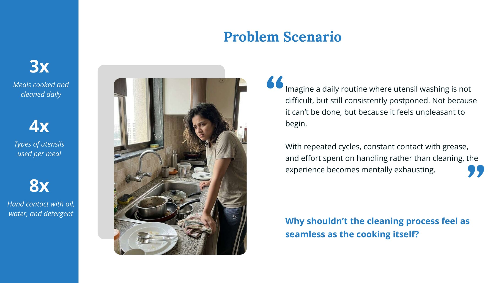
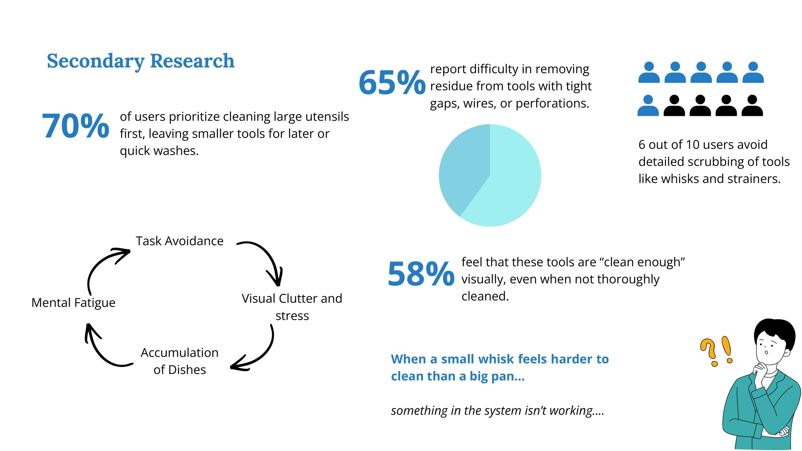
What people told us
Interviews and kitchen visits showed a disgust-driven, physically straining task. People soak intricate tools and hope, bunch spoons together, and admit that whisks and graters rarely get properly washed. Existing answers, from scrubs to dishwashers, optimise cleaning rather than the experience of cleaning, and most do not fit Indian cookware.
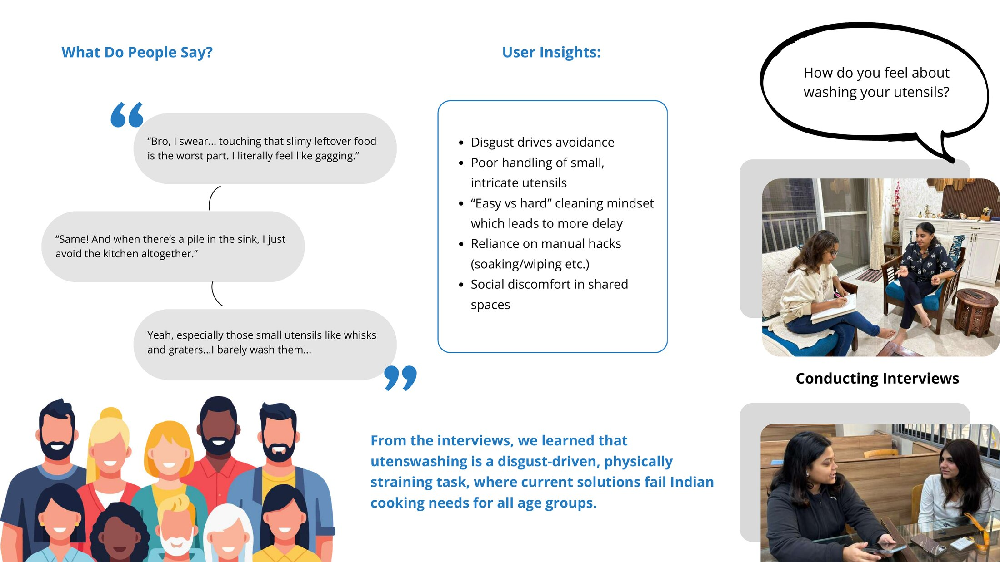
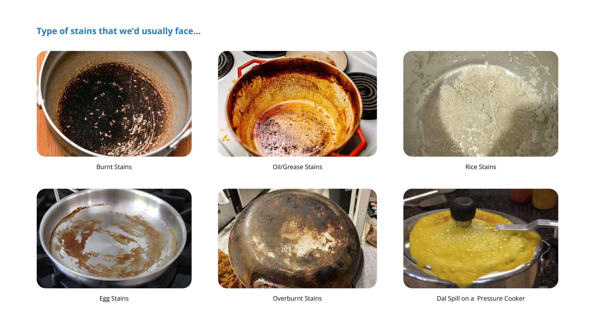
Form from the kitchen
The enclosure takes its proportions from the traditional Indian pot. We iterated through dozens of forms to balance internal volume against a tabletop footprint small enough for a city kitchen, then built mock-ups at full scale to test reach, loading and lid movement.
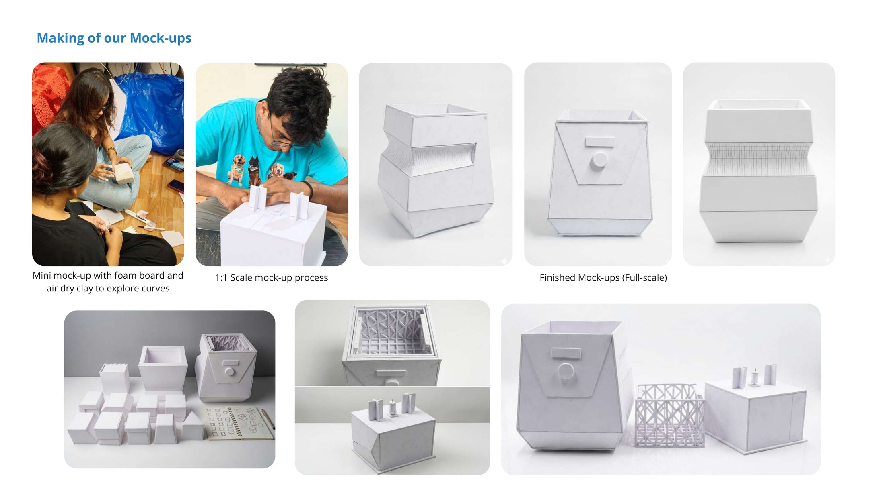
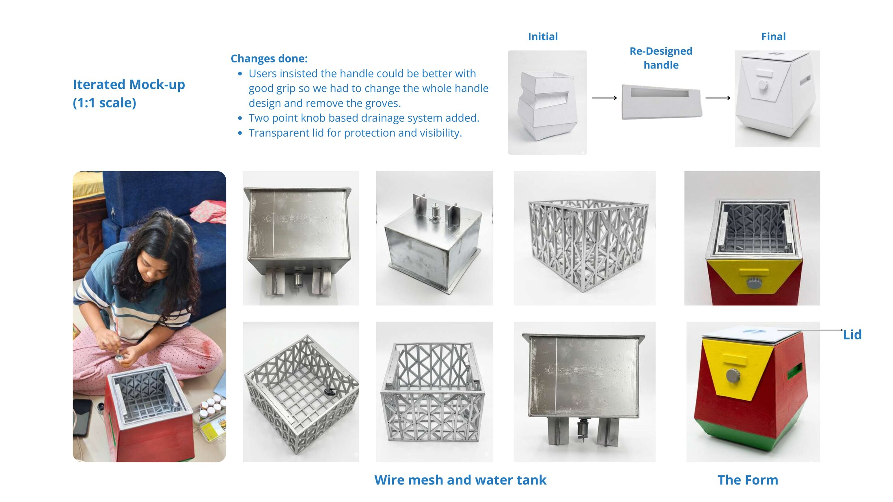
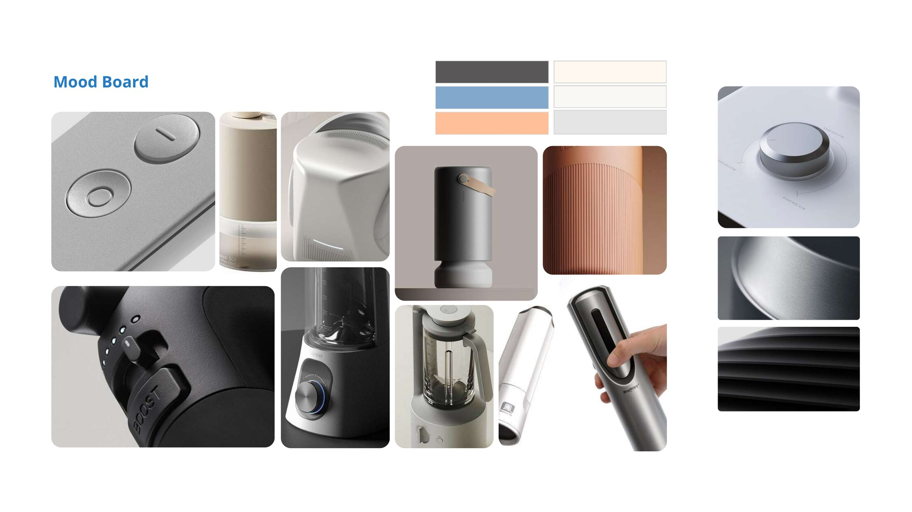
Ultrasonic, not abrasive
High-frequency transducers clean through cavitation: millions of microscopic bubbles that reach into mesh, perforations and wire without scrubbing. Our working proof of concept paired transducers with custom-fabricated internal housings, and showed residue lifting from utensils that hand-washing misses.
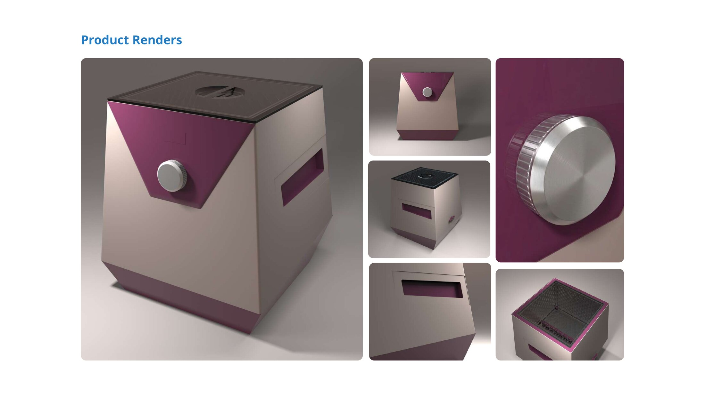
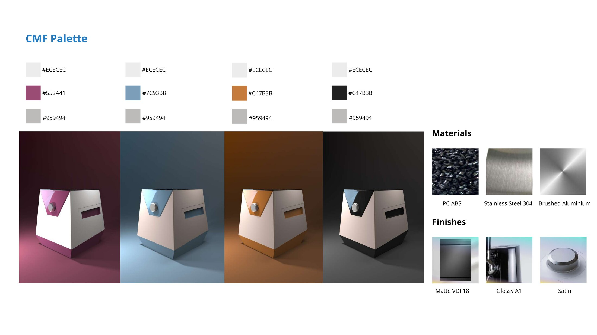
The product
A compact appliance with a stainless steel tank, a single regulator knob and a clear lid. The CMF strategy pairs a soft-touch shell with a satin metal knob in several colourways, so it sits comfortably in a modern Indian kitchen.
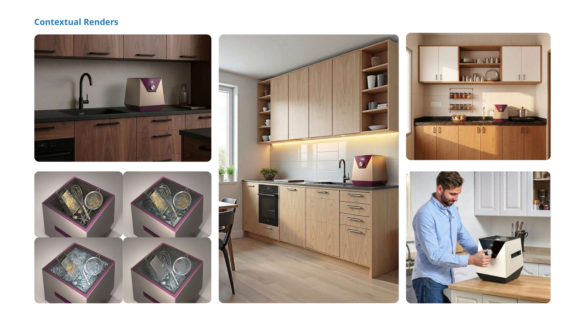
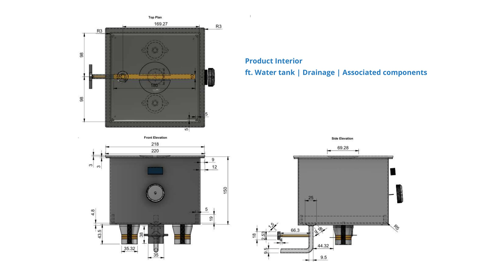
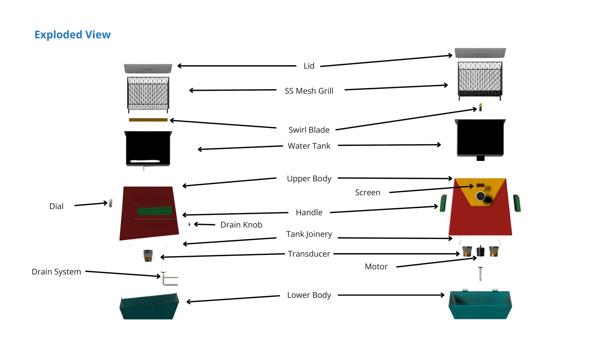